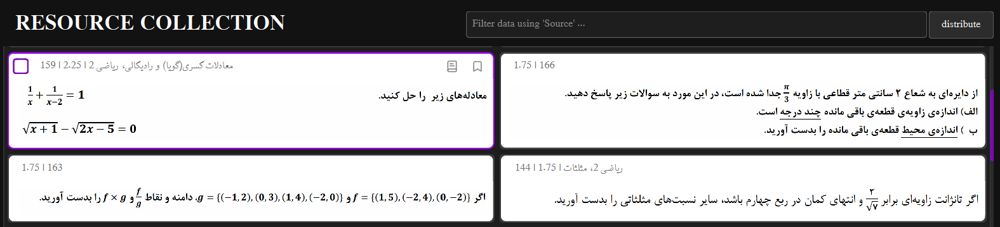
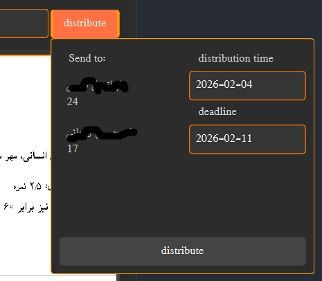
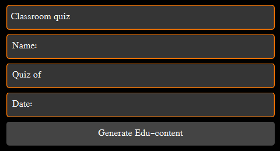
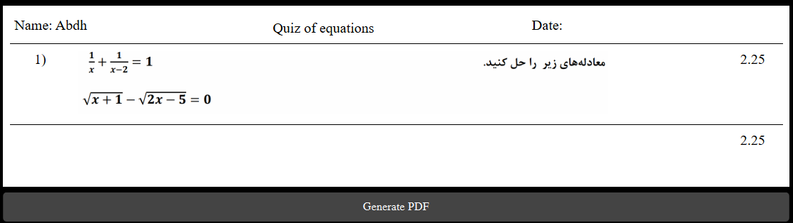
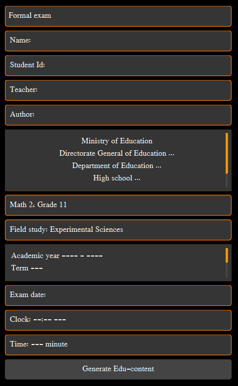
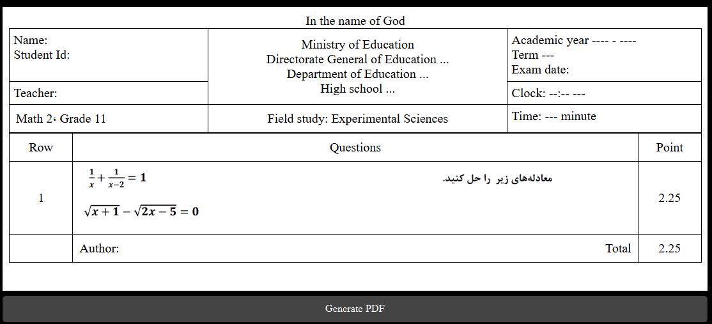

Educational Resources View
Page Version: 1.0
This page serves as the central hub for managing, distributing, and publishing educational content.
It provides a comprehensive interface where teachers can browse educational resources (Edu-Items),
assign them to students, and generate formatted educational materials using customizable templates.
The page supports both immediate distribution to specific students and bulk content generation for
classroom-wide use.

Main Educational Resources Interface
Table of Contents
Interface Overview
Layout Structure
The interface is organized into a 3×2 grid layout:
- Column 1 (Primary Workspace): Contains the main resource browsing area with filtering capabilities
- Column 2 (Actions & Configuration): Houses distribution controls, template settings, and action buttons
Default Display Settings
- Display Columns: 2-column grid layout for resource cards
- Page Size: 50 items per page for efficient browsing
- Paper Standard: A4 format (210mm / 8.27 inches width)
Header Components
- Page Title: "RESOURCE COLLECTION" - indicates the current view
- Source Filter: Text input field for filtering resources by source metadata
- Distribution Button: Dropdown menu for distributing selected resources to students

Header Section with Filtering Tools
Navigation & Operations
Resource Browsing
The main display area shows educational resources in a card-based grid. Each card represents an individual Edu-Item with the following information:
- Resource ID: Unique identifier for the educational item
- Content Description: Brief summary of the educational content
- Score/Points: Maximum achievable points for the item
- Source: Origin or category of the resource
- Additional Details: Supplementary information about the resource
Tip: Click on any resource card to select it. Selected cards are highlighted with a visible title bar. Multiple cards can be selected for batch operations.
Card Operations
Selection & Interaction
- Single Click: Selects a resource card and displays its details
- Multiple Selection: Hold
Ctrl (or Cmd on Mac) to select multiple cards
- Card Removal: Right-click on a card to access removal options
Grid Navigation
- Scroll: Navigate through pages of resources
- Auto-loading: Additional resources load automatically as you scroll
- Filter Responsive: Grid updates in real-time as filters are applied
Resource Management
Filtering System
The Source Filter input field allows you to search through educational resources using various criteria:
- Source Name: Filter by the source field of resources
- Content Description: Search within resource descriptions
- Additional Details: Filter by supplementary information
- Resource ID: Search by specific resource identifiers
Note: Filtering is case-insensitive and supports partial matching. The system searches across multiple fields simultaneously for comprehensive results.
Data Loading Strategy
The system implements efficient data loading to handle large resource collections:
- Pagination: Resources load in pages of 50 items each
- Lazy Loading: Additional pages load automatically as you scroll
- Background Processing: Data loading occurs in background threads to maintain UI responsiveness
- Memory Efficient: Only currently displayed resources are kept in memory
Distribution Workflow
Direct Distribution to Students
When accessed from the Student List page with pre-selected students, the distribution process is streamlined:
- Select Resources: Choose one or more educational items from the grid
- Configure Distribution: Click the
distribute button to open distribution options
- Set Timeline:
- Distribution Time: Defaults to current date (editable)
- Deadline: Defaults to 7 days from current date (editable)
- Review & Confirm: System shows a summary of selected items and target students
- Execute Distribution: Confirm to assign items to all selected students

Distribution Configuration Dialog
Success Confirmation: After successful distribution, the system displays a notification showing the number of items assigned and the number of students who received them.
Bulk Content Generation
When accessed without pre-selected students, the system shifts to bulk content generation mode:
- Template Selection: Opens a template selection dialog
- Content Customization: Fill in template-specific fields
- PDF Generation: Create formatted educational materials for printing or digital distribution
Template System
Available Templates
The system includes two primary templates for educational content generation:
01 - Classroom Quiz
- Purpose: Informal classroom assessments
- Required Fields:
- Student Name
- Book/Grade Information
- Date
- Format: Simple, clean layout focused on content

Classroom quiz configuration Dialog

output of classroom quiz
02 - Formal Exam
Comprehensive examination papers
- Required Fields:
- Student Name & ID
- Teacher Name
- Organization Information
- Academic Year/Term
- Field of Study
- Date, Time, and Duration
- Author Information
- Format: Professional, formal layout suitable for official assessments

Formal exam configuration Dialog

output of formal exam
Template Configuration
Each template supports language-specific configuration and automatic dimension calculation:
- Language Support: Templates adapt to the application's current language setting
- Automatic Sizing: Content width automatically adjusts to A4 paper dimensions
- Font & Direction: Template respects language-appropriate text direction (LTR/RTL) and font families
- Custom Placeholders: Support for institution-specific information and branding
Template Location: Template files are stored in \resources\templates\ directory. Each template consists of an HTML file and a JSON configuration file.
Content Generation Process
- Template Validation: System checks template file existence and integrity
- HTML Generation: Selected content is formatted according to template rules
- Placeholder Replacement: All template variables are replaced with actual content
- Dimension Calculation: Pixel dimensions are calculated based on DPI settings
- PDF Preview: Generated content is displayed in a preview window
- Export Options: Content can be saved as PDF or printed directly
Advanced Features
Database Integration
The Educational Resources View integrates seamlessly with the application database:
- Resource Storage: Edu-Items are stored in the
educational_resources table
- Assignment Tracking: Student assignments are recorded in the
quests table
- Transaction Safety: Distribution operations are performed within database transactions
- Error Handling: Comprehensive error reporting for database operations
Performance Optimizations
Loading Efficiency
- Background Threading: Data loading in separate threads
- Chunked Processing: Large datasets processed in manageable chunks
- Memory Management: Efficient resource handling to prevent memory leaks
UI Responsiveness
- Progressive Loading: UI remains responsive during data operations
- Visual Feedback: Loading indicators and progress feedback
- Error Recovery: Graceful error handling with user notifications
Accessibility Features
- Keyboard Navigation: Full keyboard support for all operations
- Screen Reader Compatibility: Proper ARIA labels and semantic HTML
- High Contrast Support: UI elements designed for visibility
- Internationalization: Support for multiple languages and text directions
Important: When generating PDF content, ensure all template fields are properly filled. Missing required information may result in incomplete or incorrectly formatted output.
Best Practice: For large distributions, consider using the bulk generation feature first to create materials, then distribute physical or digital copies. This approach reduces database load and provides consistent materials to all students.